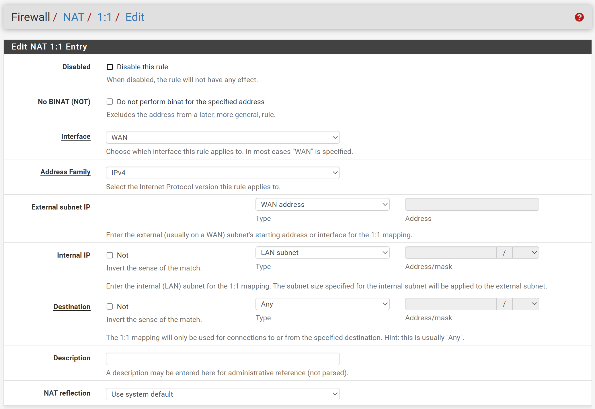
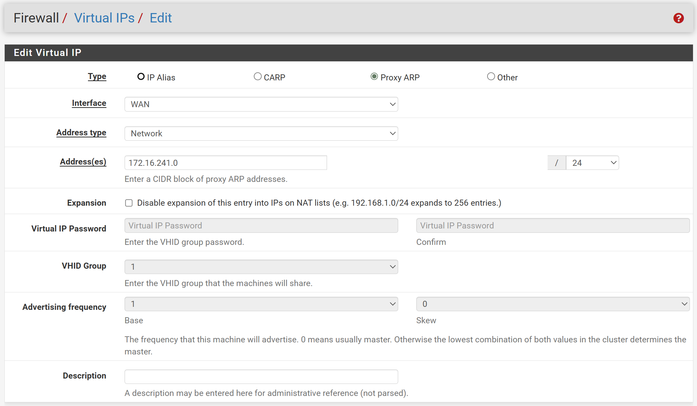
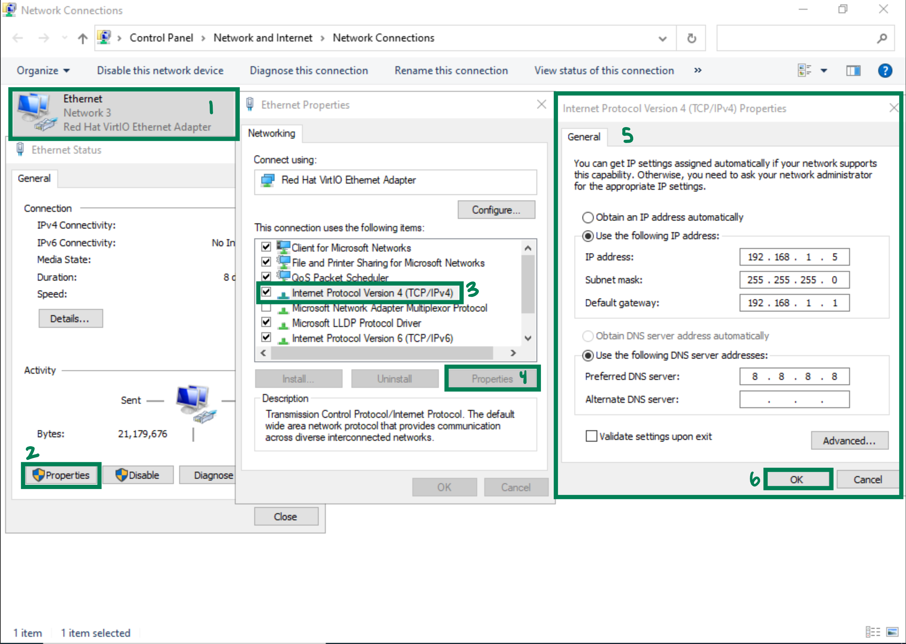

Note: For the Linux machines, all commands were run as the root user.
Completing the networking for each of the machines is crucial. This will
give the machines their own IP address, allowing
communication, data transportation, and sets the stage for changing
network settings.
IP Address: A unique identifier for a device on a network.
To make things easier, the LAN subnet will be same as the one automatically set in the pfSense router (192.168.1.0/24), and the last octets of the non-router machines will be 2-10.
| OS | IP Address | Hostname | Purpose |
|---|---|---|---|
| pfSense |
WAN: 172.16.xxx.1/16 Note: xxx is the third octet of the WAN IP. LAN: 192.168.1.1/24 |
N/A | Router |
| Windows Server 2022 | 192.168.1.2/24 | DC01 | Primary Domain Controller |
| Windows Server 2016 | 192.168.1.3/24 | WEB01 | XAMPP Web Server |
| Windows Server 2012 R2 | 192.168.1.4/24 | DC02 | Secondary Domain Controller, IIS Web Server |
| Windows 10 | 192.168.1.5/24 | WKS01 | Workstation/Client |
| Windows 7 | 192.168.1.6/24 | SMB01 | SMB Server |
| Ubuntu 22.04 | 192.168.1.7/24 | SQL01 | MySQL Server |
| CentOS 7 | 192.168.1.8/24 | WEB02 | Apache Web Server |
| Debian 11 | 192.168.1.9/24 | WEB03 | NGINX Reverse Proxy |
| Ubuntu 18.04 | 192.168.1.10/24 | SFTP01 | SFTP Server |
WAN: It's set with DHCP, but it's recommended to set it statically.
LAN: This can be kept to the default IP address, but can be changed as well.
Change the IP address of a pfSense router, using the CLI:
For the lab, it is recommended to have 1:1 NAT set up on the router to
have the ability to work from the host machine.
Network Address Translation (NAT): Translates IP addresses between interfaces.
1:1 NAT: Translates a WAN IP address to a LAN IP address and vice versa.
Set up 1:1 NAT:
admin : pfsenseFirewall > NAT > 1:1
Firewall > Virtual IPNote: Here, the subnet is /24 and not /16 because the only octets that are translated are the first three (network ID), and the last octet (host ID) needs to remain the same across the translation. /16 is for setting up the IP and making sure it's on the same subnet as the SDC router.

Note: Replace 241 with xxx.
The network configuration is the same for all of the Windows machines.
Change the IP address of a Windows machine:
Win + R and enter ncpa.cpl or navigate to
Control Panel > Network and Internet > Network and Sharing Center
Ethernet > Properties > IPv4 > Properties
Unlike Windows, the Linux machines have their IPs configured differently, although there are some similarities between the configurations.
Note: XX in ensXX is the interface number, and can be found by running
ip a.
Change the IP:
/etc/netplan/xxx-network-manager-all.yaml fileNote: xxx is a number.
network:
version: 2
renderer: networkd
ethernets:
ensXX:
addresses:
- 192.168.1.7/24
routes:
- to: default
via: 192.168.1.1
nameservers:
addresses: [8.8.8.8]
/etc/netplan/xx-installer-config.yaml file and
change DHCP4 to false
netplan apply systemctl restart systemd-networkd
Change the IP:
/etc/sysconfig/network-scripts/ifcfg-ensXX fileTYPE=Ethernet PROXY_METHOD=none BROWSER_ONLY=no BOOTPROTO=static DEFROUTE=yes IPV4_FAILURE_FATAL=no IPV6INIT=yes IPV6_AUTOCONF=yes IPV6_DEFROUTE=yes IPV6_FAILURE_FATAL=no IPV6_ADDR_GEN_MODE=stable-privacy NAME=ensXXX UUID=20917e75-ac6f-42c1-8a1c-cb0af2f01a9b DEVICE=ensXXX ONBOOT=yes IPADDR=192.168.1.8 NETMASK=255.255.255.0 GATEWAY=192.168.1.1
systemctl restart network
Change the IP:
/etc/network/interfaces fileauto lo
iface lo inet loopback
auto ensXX
iface ensXX inet static
address 192.168.1.9
netmask 255.255.255.0
gateway 192.168.1.1
systemctl restart network
Change the IP:
/etc/netplan/xx-network-manager-all.yaml filenetwork:
version: 2
renderer: networkd
ethernets:
ensXX:
addresses:
- 192.168.1.10/24
nameservers:
addresses: [8.8.8.8]
gateway4: 192.168.1.1
systemctl restart network
Active Directory (AD): A giant database and central management
for domain users, computers, and services.
There are two main components of AD: LDAP and DNS
In Evan's Lab:
There are two parts of setting up domain controllers: installing Active Directory Domain Services, which is the same for both DCs, and promoting the device to a DC.
DNS settings: change the DNS to 127.0.0.1 (localhost)
Localhost: the hostname of the machine (refers to itself).
Install AD:
Server Manager > Manage > Add Roles and Features
orControl Panel > Programs > Programs and Features > Turn Windows
Features On or Off
Rename-Computer -NewName [name] -restart
Note: The machines in the network will be given names with the form: SERVICE0X.
Ex: The DCs will be named DC01 and DC02, respectively.
Create a primary DC:
Server Manager > Flag > Promote to Domain ControllerNote: Adding a new forest creates a new domain.
FQDN: Fully Qualified Domain Name
Ex: ejuan.detergent
Functional Level: Oldest version of Windows that any domain controller has; in this case, it would be Windows Server 2012 R2.
Ex: EJUAN
To join the other machines to the AD, the DNS settings must point to the DNS servers, allowing the Domain to be discovered and joined.
The DNS settings must be changed so that the primary DNS points to the primary DC's IP, and the secondary DNS points to the secondary DC's IP.
Windows
Set the DNS the same way the IP addresses were configured.
Ubuntu 22 & 18
Set the DNS settings with the network file:
/etc/netplan/xx-network-manager-all.yaml
file replace 8.8.8.8:
nameservers:
addresses: [192.168.1.2,192.168.1.4]
netplan apply
CentOS 7
Set the DNS settings with the network file:
/etc/sysconfig/network-scripts/ifcfg-ensXX file:DNS1=[192.168.1.2] DNS2=[192.168.1.4]
systemctl restart network
Debian 11
Set the DNS settings with the GUI:
Settings > Network > Wired Settings > IPv4Automatic and enter the DNS servers' IPsDomain joining is fairly simple. The machine's hostname will be changed as good practice, so the machine can be easily identified on the network, then it will find and join the domain.
Windows 7
Rename the computer and add to the domain:
Start > Run > sysdm.cpl > Computer Name > Change
Other Windows
Rename the computer and add to the domain in PowerShell:
Rename-Computer -NewName [name] -restart
Add-Computer -DomainName [FQDN] -Restart
Ubuntu 22
Rename the computer:
hostnamectl set-hostname [name]
exit until the login screen and login again
Add the computer to the domain:
Note: This is the same for all Linux machines, but the
required packages are different.
realm discover [FQDN]
Note: The realmd package will need to be installed
if it isn't already.
realm join [FQDN]
/etc/pam.d/common-session file and add the following lines:session optional pam_mkhomedir.so skel=/etc/skel umask=077
Ubuntu 18 and CentOS 7
Rename the computer:
hostnamectl set-hostname [new name]
/etc/hosts file, and replace the
old hostname with the new one
reboot
Add the computer to the domain:
Note: The realmd, packagekit (Ubuntu 22),
and PackageKit (CentOS 7) packages will need to be
installed if they aren't already.
Debian 11
Rename the computer like with Ubuntu 18.
Add the computer to the domain:
/etc/resolv.conf file:domain [FQDN] search [FQDN]
Note: The realmd and sssd packages will need to be
installed if they aren't already.
session optional pam_mkhomedir.so skel=/etc/skel umask=077
Service: Applications, protocols, and software that run on infrastructure
and allows for communication and data sharing across a network.
Note: The root and local Administrator accounts were used, not
authenticated the Administrator@[FQDN] account.
Machine: Ubuntu 22
Purpose: MySQL database for XAMPP and Apache
Note: mysql_native_password is now deprecated.
Install MySQL:
apt update && apt upgrade -y
apt install mysql-server -y mysqld --version
service mysql status service mysql start
mysql_secure_installation validate password strength: y levels: 2 change root password: y (can use same password) continue with password: y remove anonymous use: y disallow root login remotely: y remove test database: y reload privilege tables: y
service mysql restart
mysql -u root -p
Allow remote connections:
/etc/mysql/mysqld.cnf file:bind-address 0.0.0.0
Each website needs their own database and database user so the websites are able to have their data isolated. Separated users adds a layer of security, allowing further separation between the websites.
Set up users and databases:
CREATE USER '[user]'@'%' IDENTIFIED WITH mysql_native_password BY '[password]'; flush privileges;
create database [database];
grant all privileges on [database].* to '[user]'@'%';
Machine: Windows Server 2016
Purpose: Hosts a WordPress website
Download and install XAMPP:
Words
Words
Words
Words
Words
Words
Words
Words
Words
Words
Words